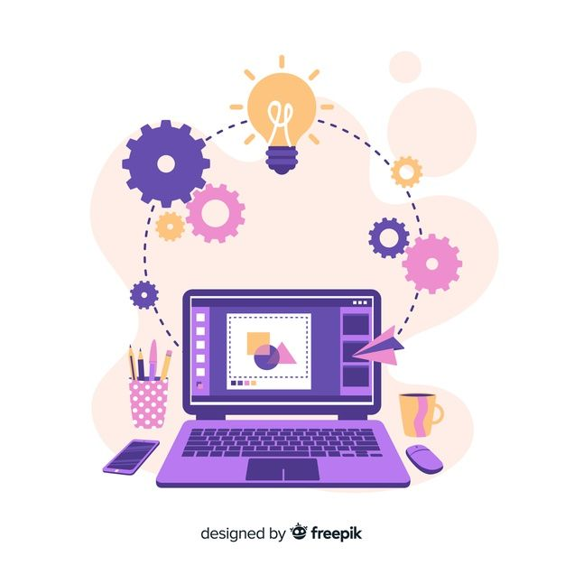

Rapido e Fácil
Com o nosso CV maker online é simples para qualquer um criar rapidamente um CV profissional. Insira os seus dados pessoais e comece a preencher o conteúdo do seu CV. Por ultimo,escolha um dos 36 temas de Cv disponiveis e descarregue seu CV.

Maior probabilidade de arranjar emprego
Com um CV profissional e representativo, irá destacar-se de todos os outros candidatos. Também terá 65% mais probabilidade de ser convidado para uma entrevista.

Organize as suas candidaturas
Frequentemente, é importante poder adaptar o seu currículo com base no emprego a que se deseja candidatar. Com o CV maker, pode criar e gerir diversos CVs diferentes de forma organizada, através da sua própria conta pessoal.